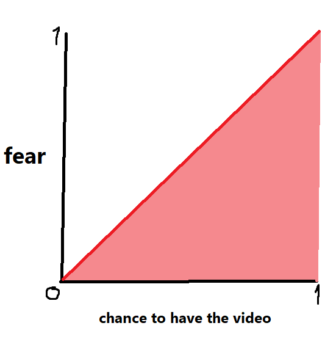

About

Decache was primarily created by SindexMon, with additional help from CanucksFan2006. Created with the sole purpose of finding Super Mario 64 big star secret through a very specific glitch, a constant flow of revelations involving internet cache eventually led the program to outgrow its origins.
Our goal is to make this stupidly complicated process as simple as possible, and ultimately prove how viable web cache really is.
Est. October 30th, 2024
Special thanks to Strawrat, TOMYSSHADOW, and BlueMaxima for their pioneering work at Flashpoint.